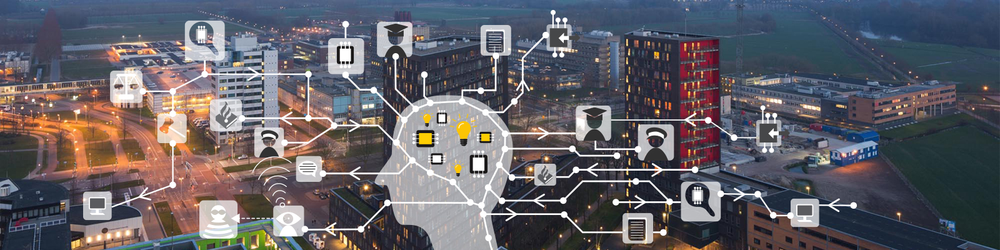
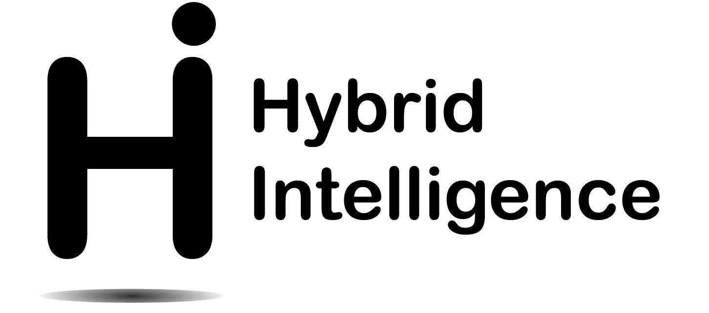
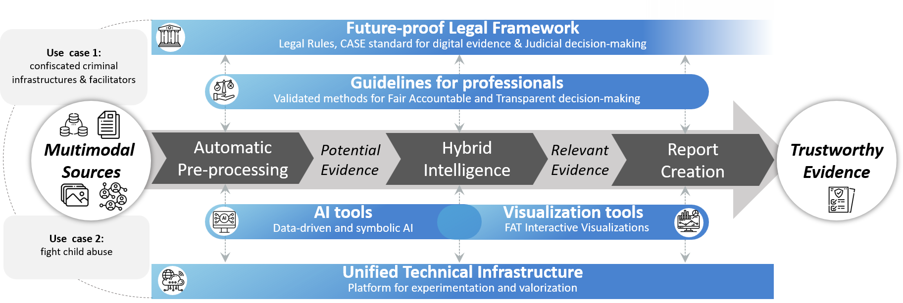

Trustworthy AI
Privacy, transparency and accountability; privacy- and ethics-by-design; responsible autonomy, consent and trust between people and AI agents.
We study how AI systems can be trustworthy, lawful, explainable and good team players, and we build the formal models, algorithms and tools to make that happen.
The lines are connected: argumentation underpins explanation and legal reasoning; norms and values link law to multi-agent systems; and all of them meet in teams where people and AI agents work together.
Privacy, transparency and accountability; privacy- and ethics-by-design; responsible autonomy, consent and trust between people and AI agents.
How people reason in law and how AI can capture and support that reasoning: legal argumentation and evidence, crime scenarios, legal knowledge-based systems, legal NLP, and transparent, lawful AI for the police.
Explanations that meet legal requirements, formal explanations with computational argumentation, explainable-by-design methods, and explanations people actually find useful.
Formal models of argument and dialogue, from abstract to structured argumentation, combined with NLP and machine learning and applied in law, police work and ethics.
How people and AI agents can work together well: quality of human–AI teams, theory of mind, guidelines for teams with LLM agents.
Agents and robots that respect social norms and human values, negotiate with each other, and adapt as norms change.

A collaboration of the Dutch National Police with Utrecht University and the University of Amsterdam, and an ICAI lab, developing AI that improves safety in the Netherlands in a socially, legally and ethically responsible way. The Responsible AI group hosts the Utrecht part of the lab, and Floris Bex is its scientific director. Research in Utrecht focuses on intelligent interactive dialogue, reasoning with legal arguments and crime scenarios, and combining symbolic and sub-symbolic AI.

A ten-year Gravitation (Zwaartekracht) programme of seven Dutch universities, funded by the Dutch Ministry of Education, Culture and Science. It aims at systems where machine intelligence augments human intellect instead of replacing it. The group is active in the Responsibility and Collaboration research lines and co-leads the Methodologies and Metrics challenge.
Also a ten-year Gravitation programme, AlgoSoc asks how public values can be realised in a society where AI is commonplace. The group works in the Justice sector, on the effects of AI on the rule of law.

A five-year NWO KIC project with four universities, the Netherlands Police and the Netherlands Forensic Institute, among others. It studies the technical, legal and organisational sides of turning raw multimodal data into trustworthy evidence that can be used in court.
A collaboration with 510, the data and digital team of the Netherlands Red Cross, on responsible AI that helps humanitarian programmes analyse large amounts of data fairly and in a trustworthy way. Davide Dell'Anna leads the collaboration in Utrecht.
So far three MSc AI and two MSc Applied Data Science students have graduated on Red Cross projects, and one more is under way. See the theses →
M. Brinkhuis, H. Prakken and P. van der Heijden, Bias en fairness in datagedreven werken. A report commissioned by the Dutch Tax and Customs Administration (Belastingdienst), Datafundamenten & Analytics section.
Details of the three HI Comp competitions on the fundamental qualities of human–AI teams (AAMAS 2024, HHAI 2024 and the Hybrid Intelligence Centre consortium meeting), and the resulting dataset of 48 usage scenarios, 24 best and 24 worst cases, to guide the design and evaluation of human–AI teams.
D. Dell'Anna, P. Murukannaiah, M. Yurrita, B. Dudzik, D. Grossi, C. Jonker, C. Oertel, P. Yolum
An adaptive control architecture for social-norm-aware robots: a robot-agnostic, BDI-based multi-agent system that lets robots identify, learn and act on social norms and cues, and adapt them over time. Used with a Nao robot (paper).
D. Dell'Anna, A. Jamshidnejad
Video recordings of interactions between people and a Nao robot controlled by SONAR, on 4TU.ResearchData. Participants consented to sharing on request, so the public record holds the metadata and access is granted on request.
D. Dell'Anna, A. Jamshidnejad
An artefact that supports the replication of studies on natural language processing for requirements engineering, by capturing the key information of a study in a structured overview. Also useful for teaching and secondary research.
S. Abualhaija, F. B. Aydemir, F. Dalpiaz, D. Dell'Anna, A. Ferrari, X. Franch, D. Fucci
Code and data from MSc theses supervised in the group, for example VIVE (value extraction with LLMs), NorMMo (explainable norm classification) and continual learning for social robots, collected on github.com/rai-uu.